Postal Sounds
The music of the city, on a map
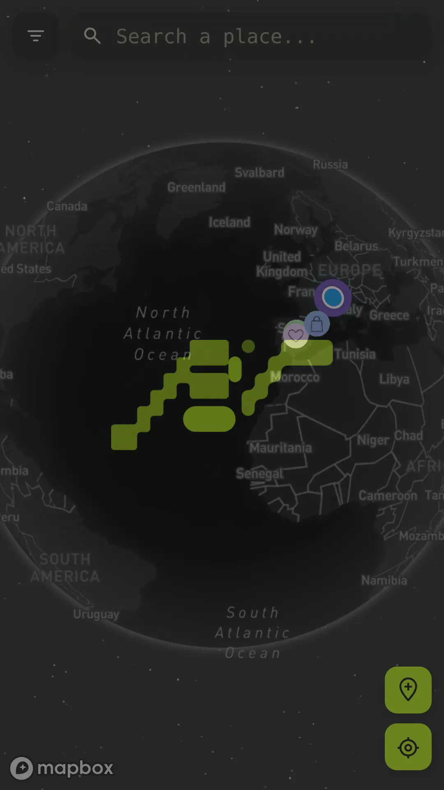
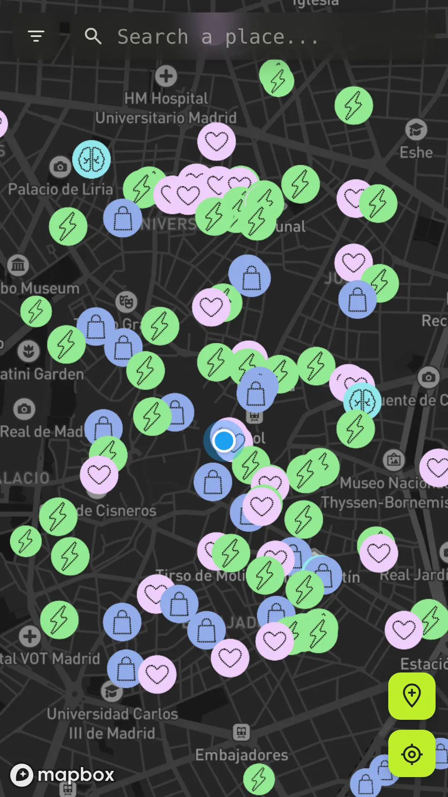
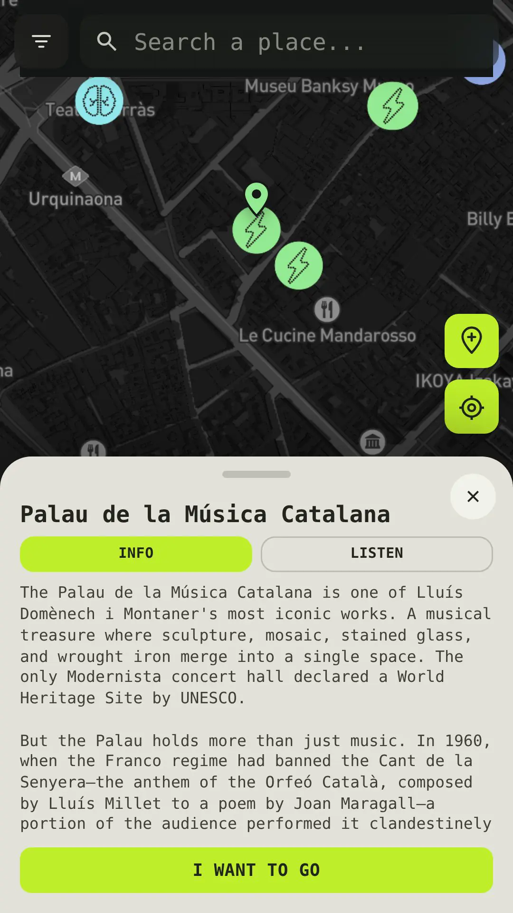
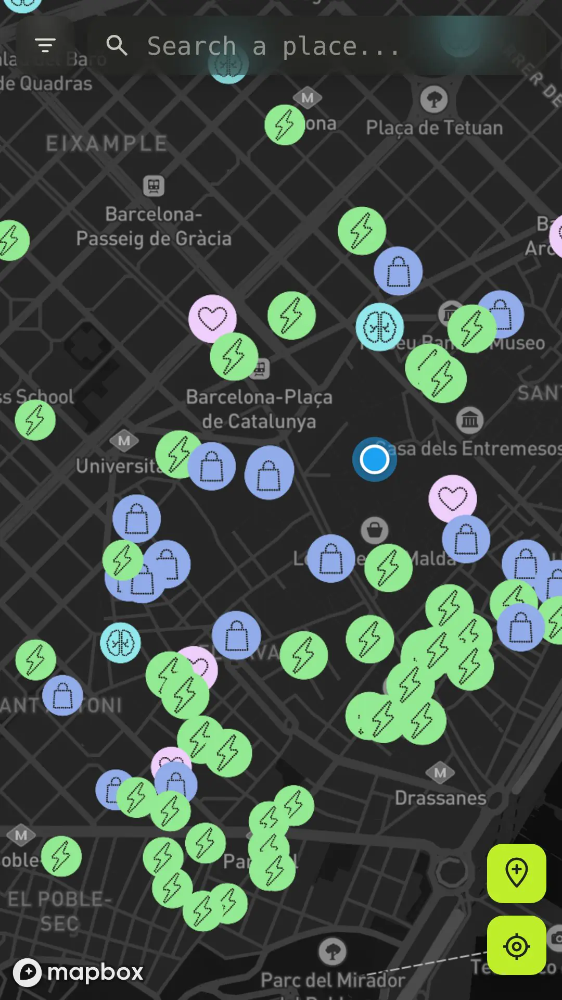
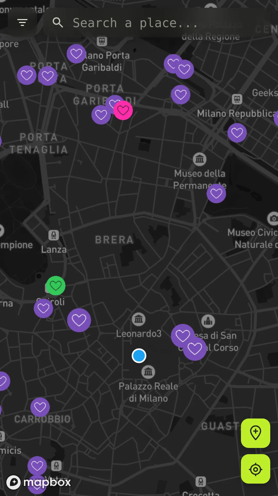
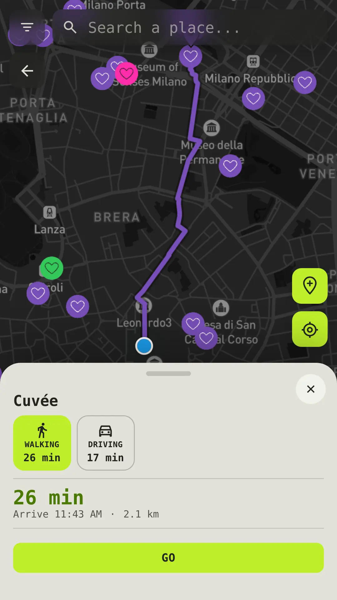
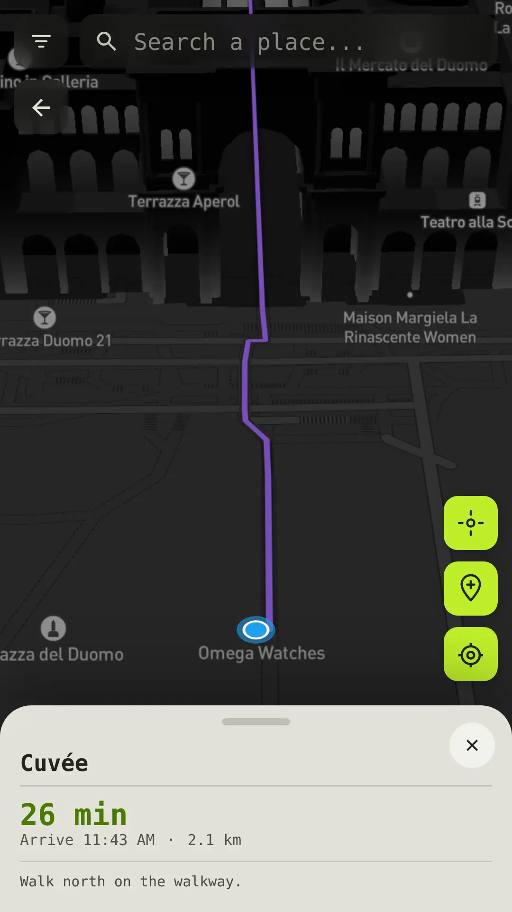
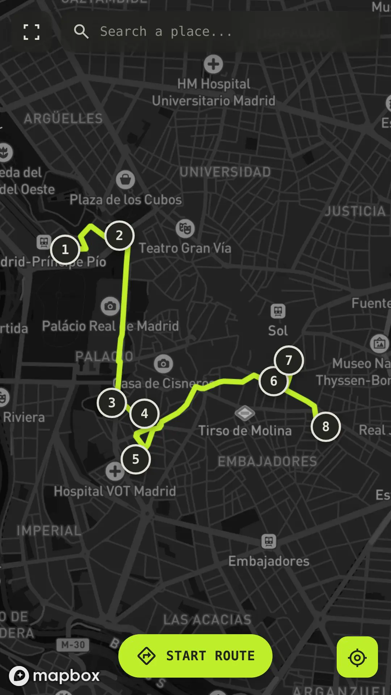
A map to discover every city's music
Postal Sounds is a guide 100% focused on music, to get to know a city through its sound: where to hear live music, record shops, the stories behind famous songs and routes with local experts.
I designed and built its centrepiece: the interactive map on postalsounds.com, in both its free and Premium versions, and the maps for its guided routes. Today it covers Madrid, Barcelona and Milan.
- Client
- Postal Sounds
- My role
- Design and development of the interactive map
- Cities
- Madrid, Barcelona and Milan
- Since
- July 2026 · live
- Where to see it
- postalsounds.com
Three cities, each with its own sound
Every place has its own category and colour, so you can see at a glance what is nearby:
Madrid
0 venuesFlamenco tablaos, jazz clubs, la Movida madrileña and the streets that inspired songs by Hombres G or Mecano.
Routes and extrasBarcelona
0 venuesFrom the Palau de la Música and the Liceu to the corners of Catalan rumba, from Peret to Carmen Amaya.
Routes and extrasMilan
0 venuesThe city of Milano Music Week and the Linecheck festival, with its own gig calendar and festival categories.
Routes and extrasFrom outer space to the venue door
This is how it works on a phone, in Madrid, Barcelona and Milan: you arrive from the Earth, pick a place and the map takes you there. Swipe to see more.
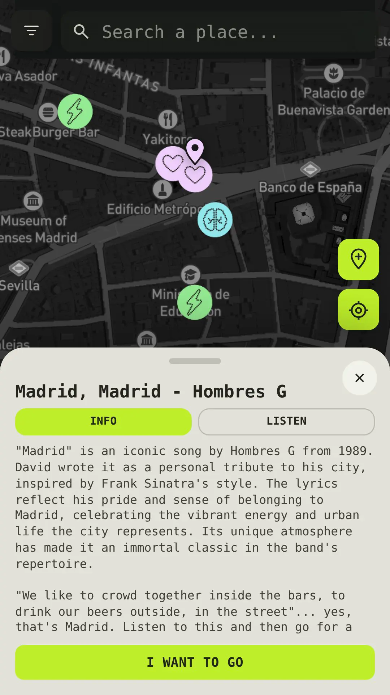
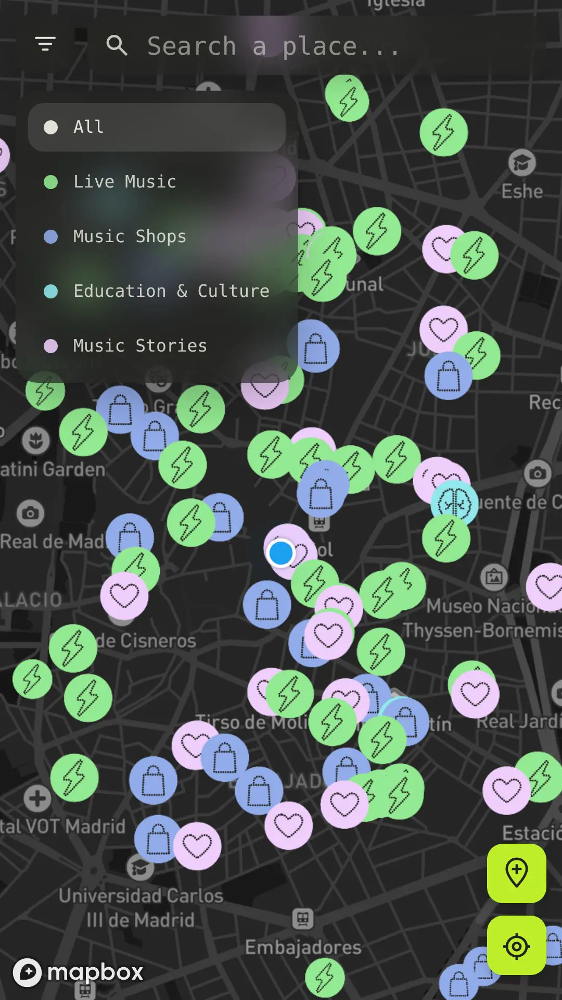
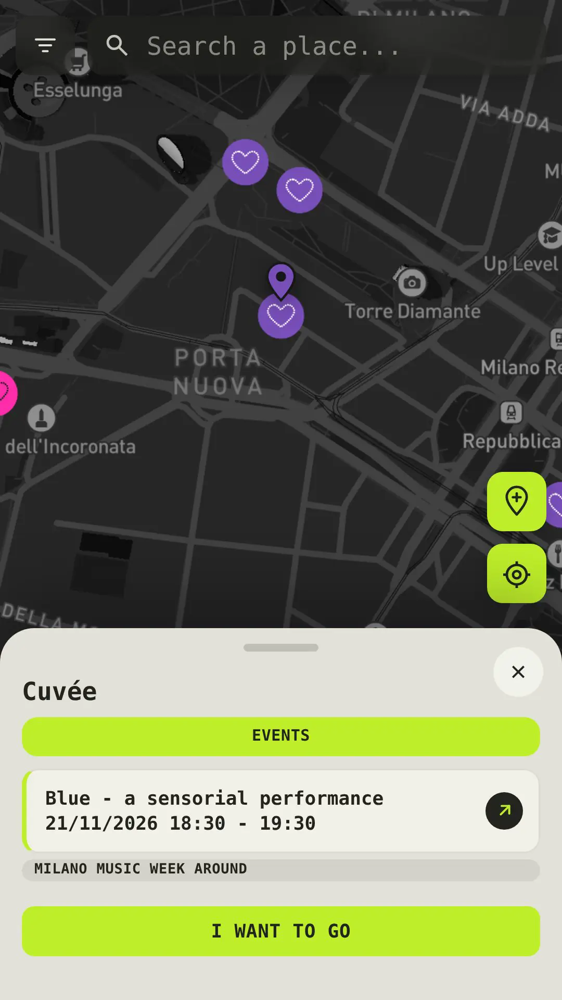
What you can do with it
An opening that hooks you
The map opens with the logo over a spinning Earth and flies to your city. It shows up right away, even on a poor connection.
Clear at a glance
Every place shows its category icon and colour. Search by name or filter by type, and the map responds instantly.
Get to know it before you go
Its story, photos, the song to play right there and the gig calendar, in a panel that slides up from the bottom.
Takes you to the door
“I want to go” plans the route on foot or by car with time, distance and arrival time, and guides you step by step.
Guided routes
Itineraries with numbered stops, such as Madrid Flamenco or Rumba Catalana, ready to start with one tap.
Free or Premium
The free version offers a selection of places in each city. Premium unlocks the full map.
Open to the community
Anyone can suggest a new music place from the map itself for the team to review.
Your language, your screen
Places, stories and buttons in English or Spanish, on any phone, tablet or computer.
Fast, reliable and easy to maintain
Loads fast
It shows the essentials first and each place’s details arrive when you open it.
Never goes blank
If the data service fails, the map keeps working with a backup copy refreshed every day.
Easy to update
Places, events and routes are updated from a dashboard, without touching code.
Tested on real phones
Every change is tested on different phones and browsers, including iPhone Safari, before it ships.
How it grew
The idea
A first map to try out places, filters, search, location and routes.
On postalsounds.com
Free and Premium maps in two languages, “Go” navigation and guided routes.
Easier to manage
Places and routes move to a dashboard; the map loads faster and has a backup.
Milan arrives
Over 100 Milano Music Week places, with their calendar and their own categories.
See it in action
The map lives on postalsounds.com with a free account. If you need an interactive map or a similar app for your project, get in touch.